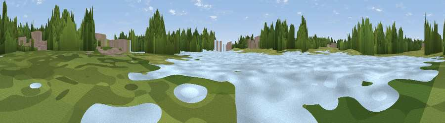

Viewpoint near Fenny Stratford
#45072 in England · top 91% of its area beats it · near Fenny StratfordWhere it is
The exact computed spot (SP 88954 35870). Click the marker for map links.
The view, rendered

A 360° render of this exact spot computed from the terrain model, tree cover and land cover — summer colours, afternoon light, calibrated against photographs of famous viewpoints. Real trees, hedges and buildings will differ in detail.
The panorama
Grey silhouette: terrain skyline in each direction (720 bearings, Earth curvature and refraction included). Dashed green: skyline with trees (+15 m) and buildings (+8 m) as obstacles. Blue strip: how far the ground is visible on each bearing.
Where the view opens
Wedge length = distance to the farthest visible ground on that bearing (vegetation-aware). Rings at 10, 25 and 50 km.
What fills the view
41% woodland · 29% grassland · 16% water · 11% built-up · 2% cropland
Angular shares of the visible panorama (visual magnitude), not map area. Landscape diversity 0.58 (0–1 Shannon).
Key numbers
More beautiful places nearby
The staircase of upgrades: each row has a higher view potential than everything closer. Driving times are estimates from straight-line distance, calibrated against real road routing — check an actual route before setting out.
| Place | Direction | Drive | Score |
|---|---|---|---|
| Viewpoint near Bow Brickhill | SE · 3 km | ~7 min | 54.0 |
| Viewpoint near Bow Brickhill | ESE · 3 km | ~7 min | 57.0 |
| Viewpoint near Sharpenhoe | ESE · 19 km | ~32 min | 57.6 |
| Viewpoint near Church End | SE · 19 km | ~33 min | 65.8 |
| Beacon Hill | SSE · 20 km | ~34 min | 74.1 |
| Viewpoint near Halton | S · 26 km | ~42 min | 74.3 |
| Coombe Hill Monument | S · 29 km | ~46 min | 75.5 |
| Viewpoint near Meon Vale | W · 72 km | ~95 min | 77.0 |
52.01414, -0.70526 · source: osm viewpoint · position refined by local search. Computed location — check access rights before visiting.